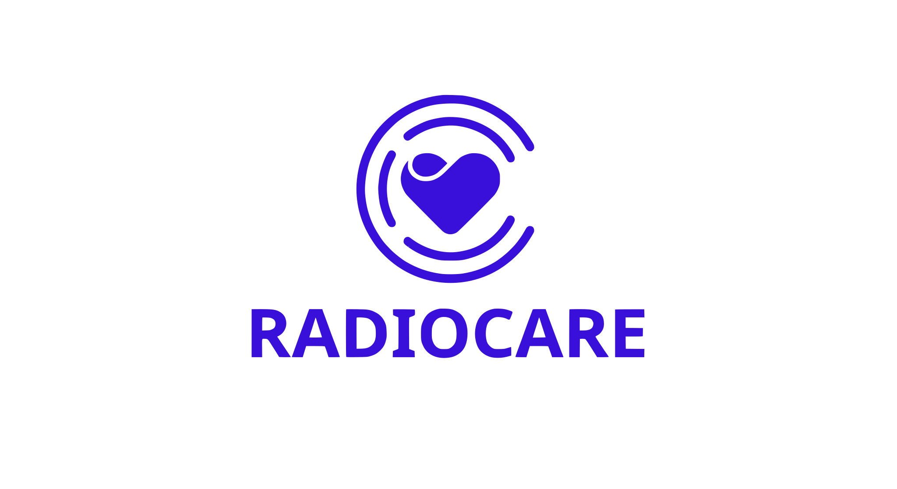
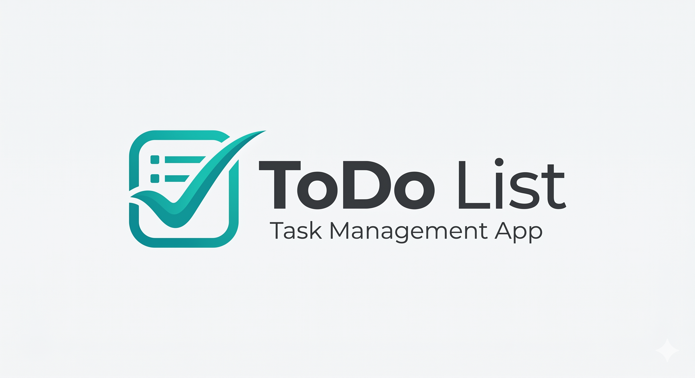

Hola, soy
OmarMehenni
Desarrollador Backend
Java / Spring Boot · Especialista Backend
Desarrollo aplicaciones web a medida, backends robustos y apps Android nativas para empresas y autónomos. Especialista Java/Spring Boot & Kotlin, disponible para proyectos freelance en Barcelona.
class OmarMehenni {
String firstName = "Omar";
String lastName = "Mehenni";
String location = "Barcelona";
boolean available = true;
// Open to opportunities
}
Desarrollador freelance en Barcelona, especialista backend y mobile
Desarrollo aplicaciones web, APIs REST y apps Android nativas para empresas y autónomos. Especialista en Java/Spring Boot, Kotlin e integración de IA. Grado en Desarrollo de Aplicaciones Multiplataforma (DAM) — disponible para proyectos freelance y colaboraciones técnicas.
Idiomas hablados
Backend Escalable
APIs REST con Java, Spring Boot, JPA/Hibernate, Spring Security y JWT — arquitectura MVC lista para producción.
Despliegue Cloud
Aplicaciones Spring Boot desplegadas en Oracle Cloud Infrastructure (OCI) — contenedores Docker, endpoints REST en producción.
Sistemas en Tiempo Real
Pipelines de datos y analítica en tiempo real en un contexto IoT industrial.
Multilingüe
Dominio de 6 idiomas: Árabe (Nativo), Tamazight (Nativo), Francés (C1), Español (B2), Inglés (B1/B2), Catalán (A2).
¿En qué puedo ayudarte?
Aplicaciones web a medida
Diseño y desarrollo de aplicaciones web adaptadas a las necesidades de tu negocio: paneles de gestión, herramientas internas, plataformas de clientes y automatización de procesos, desde el servidor hasta la interfaz.
Aplicaciones móviles Android
Desarrollo de aplicaciones nativas para Android, conectadas a tu sistema o a tus servicios, con un código mantenible y listas para su publicación.
Backend, APIs y bases de datos
Diseño de la arquitectura del servidor, APIs REST seguras y bases de datos fiables y optimizadas, con autenticación y control de accesos para proteger tus datos y los de tus usuarios.
Integración de Inteligencia Artificial
Incorporación de funcionalidades de IA en tus aplicaciones y procesos mediante APIs: asistentes, automatización de tareas y análisis de información.
Despliegue, mantenimiento y soporte
Puesta en producción en contenedores, mantenimiento evolutivo y correctivo, y soporte técnico continuado para que tu aplicación siga funcionando.
Tarifas y presupuestos
Desarrollo
desde 35 €/hora
IVA no incluido (21 %)
Aplicaciones web, móvil, backend e integración de IA
Proyectos cerrados
Consultar
Respuesta en menos de 48 h
Presupuesto personalizado, gratuito y sin compromiso
Mantenimiento y soporte
Facturación mensual
Tarifa según alcance acordado
Despliegue, mantenimiento evolutivo y soporte técnico continuado
* Todos los precios son orientativos e indicados sin IVA (21 %). El importe exacto se detallará en el presupuesto escrito.
Trabajos seleccionados

Medical telemetry platform for real-time patient monitoring. Smartwatch integration, vital data conversion to HL7 FHIR standard, clinical logic engine for anomaly detection and alert generation.
Role
Backend + Android Developer

RESTful API for task management with full CRUD operations. Supports keyword search, dynamic filtering, and date-range queries. Clean layered architecture with Controller, Service, Repository, and Model separation.
Practice backend modeling a realistic healthcare domain. Covers patients, doctors, appointments, prescriptions and insurance with clean layered architecture and full JPA relationship mapping.
Experiencia técnica
Experiencia profesional
Admira (Bits & Atoms)
Desarrollador de Software (Prácticas)
Misiones
- 01Desarrollo Digital Signage & IoT multiplataforma (Linux, Windows, Android)
- 02Integración de Machine Learning e IA para automatización y analítica en tiempo real
- 03Diseño de arquitectura backend escalable y refactorización de código legacy
Contribuciones clave
- ›Trabajo en sistemas en producción desplegados en múltiples entornos de SO
- ›Aplicación de modelos ML a flujos de datos en tiempo real en contexto IoT industrial
- ›Contribución al refactoring backend que mejoró la mantenibilidad del sistema
- ›Colaboración en equipo ágil en la entrega de software multiplataforma
Disponible para proyectos. Disponible para proyectos freelance de desarrollo backend, mobile y web.
Certificaciones & formación
Android 14 & Kotlin Development
Udemy
Programación de Bases de Datos con SQL
Oracle
Desarrollador Python
Udemy
Trabajemos juntos
Disponible para proyectos freelance de desarrollo backend, mobile, web e integración de IA. Respondo en menos de 48 h.
He leído y acepto la política de privacidad al ponerte en contacto.